实验二X射线特征谱测量及X射线吸收实验
实验准备：
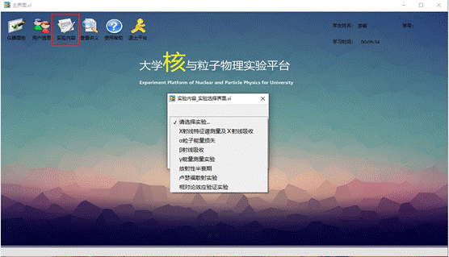
打开实验软件并登陆，选择实验内容，在下拉菜单中选择“X射线特征谱测量及X射线吸收实验”
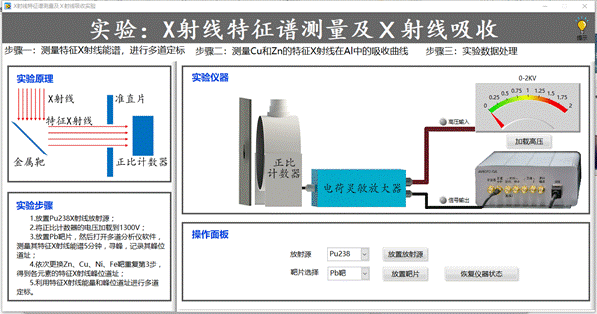
在实验界面右上角点击“提示”，可查看实验步骤。
实验步骤：
1.
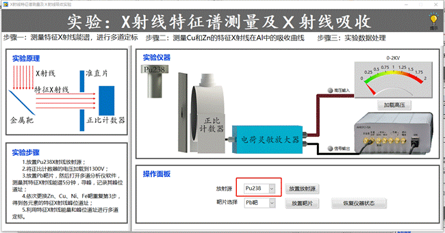
选择放置Pu38放射源，并预热5分钟。
2.
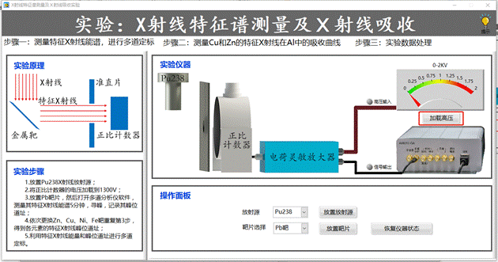
将正比计数器的电压加载到1300V；
3.
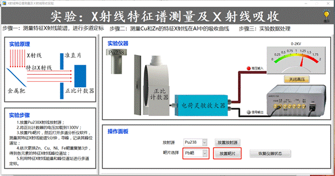
选择放置Pb靶片，打开多道分析仪软件，测量其特征谱线5分钟，寻峰并记录其道址；
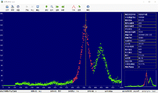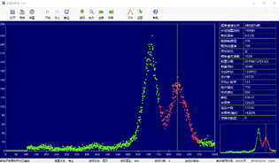
4.
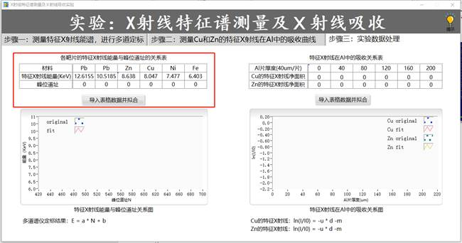
依次更换Zn、Cu、Fe、Ni，得到各元素的特征X射线峰位道址，在“步骤三”界面中填入“各靶片的特征X射线能量与峰位道址的关系表”中，对数据进行拟合并定标；
5. 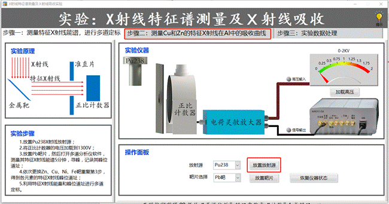
在“步骤一”中点击放置放射源Pu238，再选择“步骤二”，进入步骤二界面；
6. 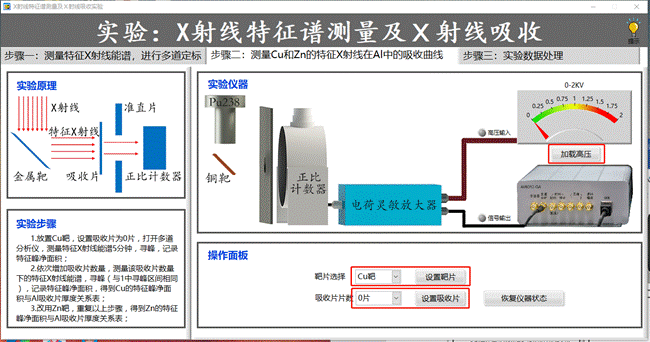
在“步骤二”中选择Cu靶并设置靶片，吸收片数量设置为0，再加载高压，使用多道分析软件开始计数；
7. 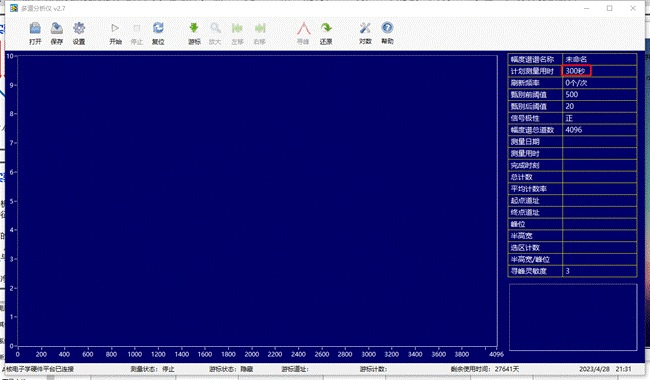
在多道界面中，设置计时时间为60s，点击“开始”进行采集；
8. 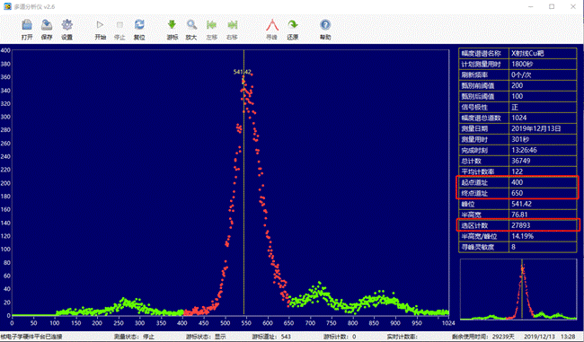
完成一次采集后进行寻峰，选择一个包含特征峰在内的选区，记录其选区计数：
9. 依次增加吸收片数量，记录各吸收片数量下的特征X射线能谱，记录过程中，寻峰的选区不得变更，即可得到Cu的特征峰净面积与Al吸收片厚度关系表，填入步骤三的“特征X射线在Al中的吸收关系表”中，并进行拟合；
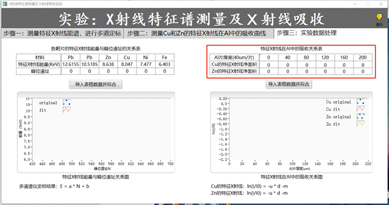
10. 在步骤二中将Cu靶更换为Zn靶，重复以上步骤，得到Zn的特征峰净面积与Al吸收片厚度关系表，填入步骤三“特征X射线在Al中的吸收关系表”中，并进行拟合。
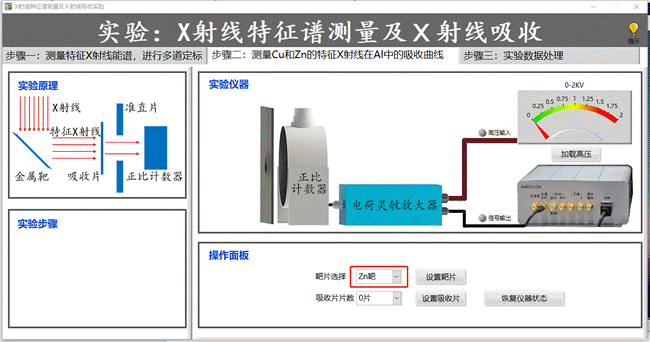